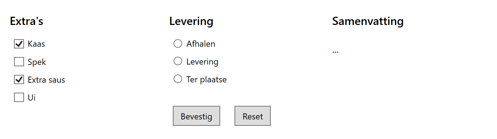

Doel: werken met CheckBox en RadioButton.
Lees vooraf de theorie over de CheckBox en RadioButton.
Let op:
IsChecked is een nullable boolean: true, false of null: controleer meestal zo: chkCheese.IsChecked == true.GroupName hebben; je kan dan maar één keuze maken uit die groep.
Alle margins en paddings zijn veelvouden van 5.
Grid met één rij en drie gelijke kolommenStackPanel met bovenaan telkens een TextBlock voor de titel (16px, semibold)GroupName te geven.IsCheckedStackPanel toe voor de twee buttonsTextBlock toe voor de samenvattingstekst.Click-event.List<string>txtSummary een samenvatting in twee regels naar voorbeeld van de screenshot